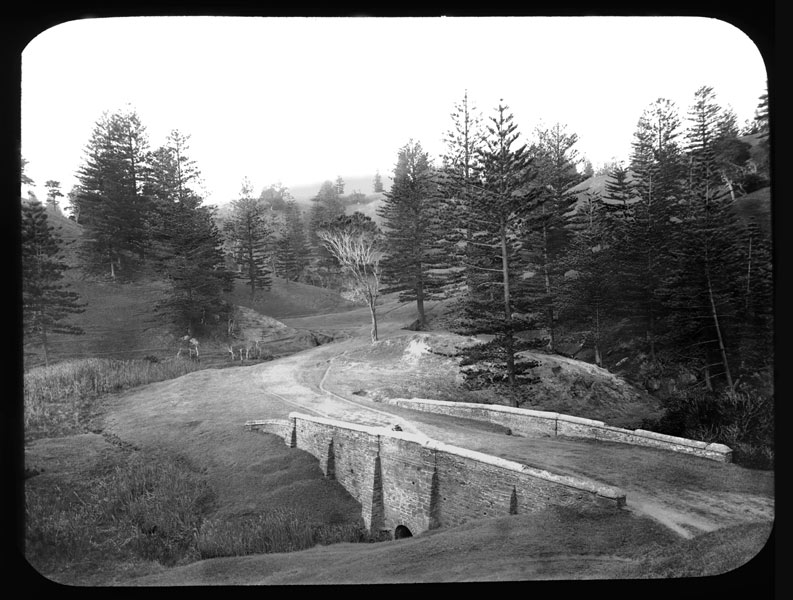

Norfolk Island History
Content 1
The Cemetery has an outstanding collection of headstones and other remains dating from the earliest period of European settlement, including the first and second penal settlement periods and the Pitcairn period with associations with the Bounty, set in an evocative and picturesque historical landscape. Many stone walls, wells, drains, building platforms, bridges, culverts, roads, quarry sites, privies and archaeological sites of former buildings are important remains. These include Bloody Bridge. The remnant serpentine landscape is an outstanding example of colonial period (pre-1850) attitudes to landscape design in Australia which reflected contemporary English attitudes to landscape design.

Content 2
The place is particularly infamous as one of two places of secondary punishment within the Australian colonies (the other being Port Arthur). Its reputation was renowned throughout the British Empire to act as a deterrent to further convict crime in the colonies. It is also associated with an experiment in penal reform in the NSW colony which underpinned modern approaches to penal practice internationally. It has an association with Australia's founding and early personalities such as King, Hunter, Foveaux, Wentworth, Anderson, Maconochie, Price and Cash. It is also associated with the 1790 wreck of HMS Sirius, the flagship of the First Fleet and the only sizable warship available to defend the colony which was about to sail to China to obtain desperately needed food supplies for the colony at Sydney Cove (Australian Construction Services, 1994).
Content 3
The low-lying land of KAVHA is generally composed of calcarenite, a limestone formed of cemented cross-bedded calcareous sand, the remnants of a formerly much more extensive coral formation (Tropman and Tropman 1994). The dunes behind Emily Bay and Cemetery Beach contain a number of small fossil and sub-fossil deposits of recent age (between 450 and 7 000 years BP). These sites have yielded some fossilised vertebrate bones, remains of several land snail species that are now considered to be extinct or extremely rare, and fossilised seeds and logs of the Norfolk Island Pine (Tropman and Tropman 1994; Anderson and White 2001; DEH 2005). These fossils provide evidence of plant and animal life that existed on Norfolk Island before human occupation.